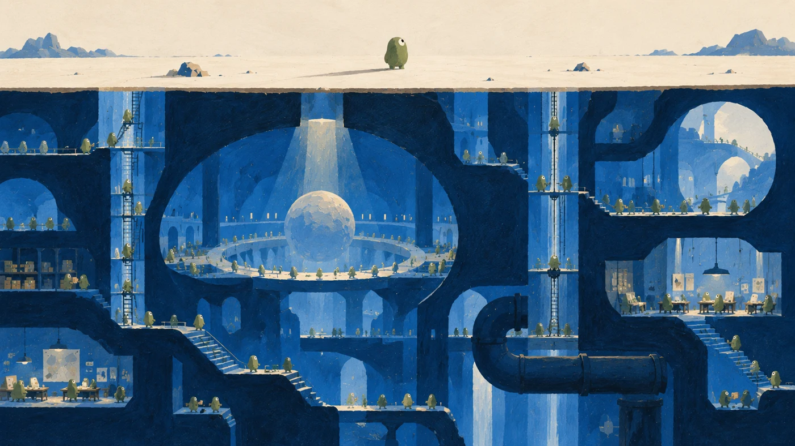

From the research notebook
Winning by overfitting
Lessons from the NeurIPS 2025 EAI Challenge.
 By San Kala
By San Kala
AI, robots & possible futures. Essays and animated films by San Kala.
 7:29 / Film 01
7:29 / Film 01
We picture AI in a chat window. I think we should picture it out in the world, with a very different number of hands.

Another Sky lets you stand inside a cylindrical space habitat and look across to the ground above you. One of my space experiments at Dyson Swarm.
Explore Another Sky ↗
Lessons from the NeurIPS 2025 EAI Challenge.
Get new essays, films, and experiments in your inbox. Free, and sent when there’s something ready.

I work on AI at eBay. I made Paper Robots to give the ideas in my essays a world of their own. This is also home to my writing, research notes, and small experiments.